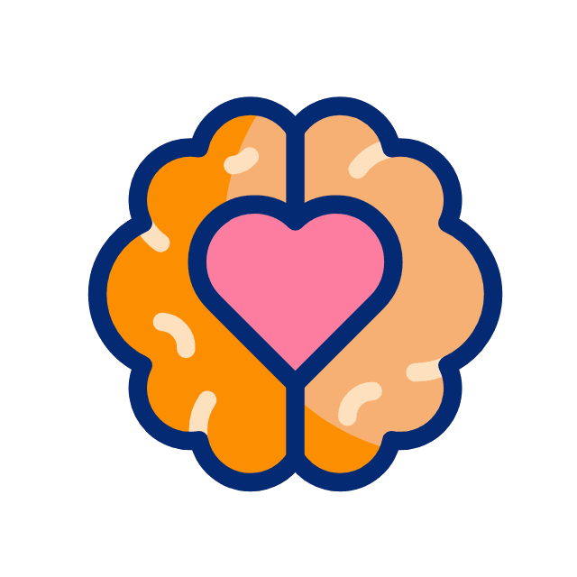
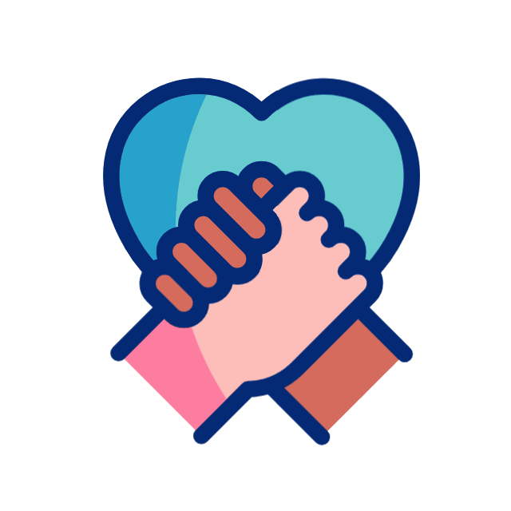
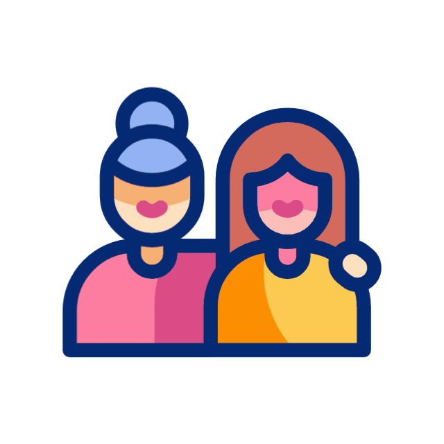

A LITTLE MORE ABOUT HER
Meet Felicia.
Behind every smile is a collection of experiences, memories, dreams, and little moments that make someone who they are. This is a closer look at the person behind the story.
WHO SHE IS
A little glimpse into Felicia
Sometimes the best way to understand someone is through the basics—their personality, the hobbies they enjoy, and the simple things they care about most. Here is a closer look at the little details, qualities, and dreams that make her who she is.
THE BASICS
Getting to Know Her
Felicia Rechelle Anak Antony
Feli
18/10/2006
Miri, Sarawak
Sekolah Kebangsaan Merbau, Miri
Sekolah Menengah Kebangsaan Merbau, Miri
Universiti Teknologi MARA Sarawak
Malay, English, Iban
HER CHARACTER
What Makes Her, Her
Personality
- Resilient: She stays strong through challenges, learns from every experience, and always finds the courage to keep moving forward.
- Loyal: She stands wholeheartedly beside the people she cares about, offering steady support, trust, and genuine kindness through every season of life.
Personal Values
- Self Respect
- Honesty
- Loyalty
A FEW WORDS ABOUT HER
Three Words That Describe Her

Thoughtful

Caring

Supportive
HER FAVOURITES
Little Things She Loves
Beige & Brown
Ayam Masak Merah & Mee Kolok Miri
She does not have a specific favorite song, she just vibe with mainstream alternative and dark R&B.
HER FUTURE
Dreams & Aspirations
Hidden Talents
Cooking
A little chef at heart! She loves creating delicious dishes and adding her own special touch to every meal. ♡
Future Dreams
To become someone who is useful in life, get a good job, make my parents proud, give back to them for everything they’ve done for me and find a good life partner
HER WORDS
Personal Motto
“ Growing with purpose, living with gratitude ”
HER STORY CONTINUES
There is always more to discover.
Continue exploring HERSTORY to discover the people she loves, the experiences that have shaped her, the things she enjoys, and the memories she continues to treasure.
Back To HERSTORY →